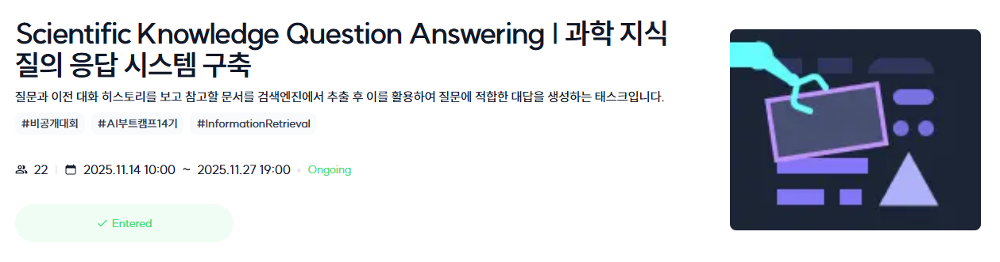

커널 아카데미 AI Lab #011 97–126일차 Lang Chain 프로젝트와 IR(information retrieval) 경진대회
2025.11.27.(THU)
Lang Chain 프로젝트
97일차부터 103일차까지는 LM to LLM/Lang Chain(with RAG) 온라인 녹화강의 자율수강이 진행됐다. 그리고 104일차부터 111일차까지 8일간 Lang Chain 프로젝트가 진행했다.
프로젝트 소개
프로젝트는 자유주제로 LLM과 RAG를 활용해 특정 태스크를 수행하는 Agent를 구축하는 것이었다. 우리 팀은 팀원간 아이디어 회의 및 추첨을 통해 AI 커머스/마케팅 전문 Agent를 구현하기로 했다. 모든 팀원이 각자 Agnet 구성 과정과 협업 과정을 경험하기 위해 우리는 각자 특정한 세부 태스크를 처리하는 Agnet를 구현한 후 이를 하나의 메인 Agent에 연결하여 메인 Agent가 사용자의 입력(질문)에 따라 적절한 Agent를 호출하고, 해당 Agnet의 응답을 출력하는 방식의 시스템을 기획했다.
프로젝트 진행 내용 및 결과
5명의 팀원이 각각 광고 문구 추천, 소비 트렌드 분석, 사용자 세그먼트 분류, 리뷰 감성 분석, 경쟁사 분석 Agent를 구현하기로 했고, 나에게 할당된 작업은 리뷰 감성 분석 Agent의 구현이었다. 나는 먼저 사용자의 입력에서 제품명을 추출하고 추출된 제품명을 바탕으로 리뷰 데이터를 수집했다(제품명 추출은 OpenAI API를 활용해 진행했고, 리뷰 데이터 수집은 Google Custom Search JSON API와 Google 검색 엔진의 기본 기능인 고급 검색을 결합해 진행했다). 다음은 OpenAI API를 활용해 소비자 리뷰 감성을 분석하고 주요 토픽을 추출하는 작업을 진행했다. 마지막으로는 같은 방식으로 리뷰 요약 및 개선점 파악을 진행하고, 이를 기반으로 python의 reportlab 라이브러리를 활용하여 최종 보고서를 작성하는 작업을 진행했다. 이 프로젝트는 대회가 아니어서 따로 순위 경쟁이나 성능 평가는 이루어지지 않았고, 팀원들이 각자 구현한 Agent들을 메인 Agent 및 프론트엔드에 연결하고 그 기능을 시연해보는 것으로 마무리됐다.
IR(information retrieval)
이후 112일차부터 116일차까지 IR 온라인 녹화강의 자율수강이 진행됐고, 117일차부터 126일차까지 IR 경진대회가 진행됐다.
대회 소개
대회 주제는 과학 지식 질의 응답 시스템 구축으로, 사용자와의 대화 히스토리를 저장하고 이를 기반으로 대화형 시스템을 구축하되, 주어진 문서 데이터(과학 지식 관련 문서)를 활용하고 그 활용 여부를 기록하도록 하는 것이었다.
대회 진행 내용
대회에서 주어진 베이스라인 코드를 돌려보며 개선점을 찾아본 결과, 과학과 무관한 질의가 주어졌을 때도 시스템이 과학 문서를 탐색하고, 그로 인해 성능이 떨어지는 문제를 확인할 수 있었다. 이에 Solar Pro API를 활용해 질문이 주어질 때 이것이 과학과 관련된 질의인지를 먼저 판단하고, 관련이 있을 때만 문서를 탐색하도록 기능을 수정했다.
대회 결과
전체 4개 팀 중 2등을 기록했다. 솔직히 작업량이 많지 않았는데 높은 순위가 나온 것이 아리송했다.